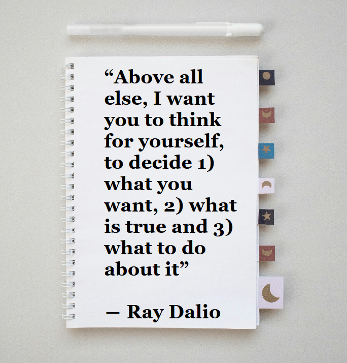
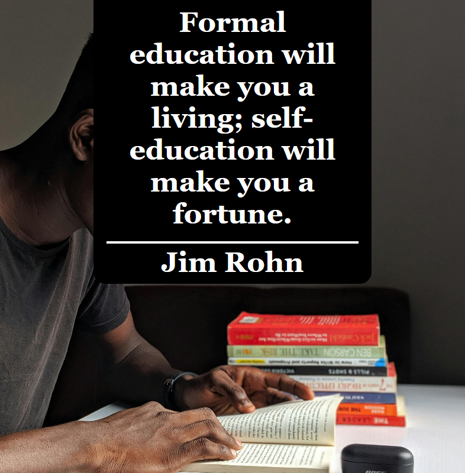

"Life isn't about finding yourself. Life is about creating yourself. "
— George Bernard Shaw
“Formal Eductaion will make you a living; self-education will make you a fortune.” —Jim Rohn
"There is no good or bad without us, there is only perception. There is the event itself and the story we tell ourselves about what it means"
— Ryan Holiday
"A single day is enough to make us a little larger or, another time, a little smaller."
— Paul Klee
“If you are not in the process of becoming the person you want to be, you are automatically engaged in becoming the person you don't want to be.” —Dale Carnegie

“Nearly every regret, every mistake, every embarassing moment—wether it be personal or professional or historical have one thing in common: Somebody lost control of their emotions. Somebody got carried away. Somebody was scared, or defensive. Somebody wasn't thinking beyond the next few seconds.” —Ryan Holiday
“It takes something more than intelligence to act intelligently.” —Fyodor Dostoevsky
“Every time you confront something painful, you are at a potentially important juncture in your life—you have the oppurtunity to choose healthy and painful truth or unhealthy but comfortable delusion.” —Ray Dalio
“Most of us spend too much time on what is urgent and not enough time on what is important.” —Steve Corvey
“Above all else, I want you to think for yourself to decide 1) what you want, 2) what is true and 3) what to do about it ” —Ray Dalio

“Do not speak of your happiness to one less fortunate than yourself.” —Plutarch
“Above all, don't lie to yourself. The man who lies to himself and listens to his own lie comes to a point that he cannot distinguish the truth within him, or around him, and so loses all respect for himself and for others. And having no respect he ceases to love.” —Fyodor Dostoevsky
“Cultivativation of the mind is as necessary as food to the body.” —Cicero
“Devote the rest of your life to making progress.” —Epictetus
“The wealth required by nature is limited and is easy to procure; but the wealth required by vain ideals extends to infinity.” —Epicurus
“The past has no power over the present moment.”
― Eckhart Tolle
“The mind that is anxious about future events is miserable.”
― Seneca
“Time spent amongst trees is never wasted time.”
― Katrina Mayer
“The quiter you become the more you can hear.”
― Ram Dass
“Whenever you are confronted with an opponent. Conquer him with love.”
― Mahatma Gandhi
“There comes a time in your life when you have to choose to turn the page, write another book or simply close it.”
― Shannon L. Alder
“Whatever yo decide to do make sure it makes you happy.”
― Paulo Coelho
“Build a life you don't need to escape from.”
― Ryan Holiday
“War is over ... If you want it.”
― John Lennon
If you love me as you say you do,' she whispered, 'make it so that I am at peace.”
― Leo Tolstoy
“You cannot find peace by avoiding life. ”
― Virginia Woolf
“You can find peace amidst the storms that threaten you.”
― Joseph B. Wirthlin
“Those who are at war with others are not at peace with themselves.”
― William Hazlitt
“Peace is when time doesn't matter as it passes by. ”
― Maria Schell
I think it's naive to pray for world peace if we're not going to change the form in which we live.”
― Godfrey Reggio
"It’s not your salary that makes you rich, it’s your spending habits." — Charles A. Jaffe
"Do not save what is left after spending, but spend what is left after saving." — Warren Buffett
"You must gain control over your money or the lack of it will forever control you." — Dave Ramsey
"Save money, and money will save you." — Unknown
"He who buys what he does not need, steals from himself." — Swedish Proverb
“When money realizes that it is in good hands, it wants to stay and multiply in those hands.”
― Idowu Koyenikan
“When you work on something that only has the capacity to make you 5 dollars, it does not matter how much harder you work – the most you will make is 5 dollars.”
― idowu koyenikan
“If you’re in the luckiest one per cent of humanity, you owe it to the rest of humanity to think about the other 99 per cent.”
― Warren Buffett
“Forecasts may tell you a great deal about the forecaster; they tell you nothing about the future.”
― Warren Buffett
“I try not to borrow, first you borrow then you beg.”
― Ernest Hemingway
Money, like emotions, is something you must control to keep your life on the right track. -Natasha Munson
Too many people spend money they haven’t earned, to buy things they don’t want, to impress people they don’t like. – Will Smith
I’m so poor I can’t even pay attention. – Ron Kittle
“Rich people have small TVs and big libraries, and poor people have small libraries and big TVs.” – Zig Ziglar
To get rich, you have to be making money while you’re asleep. – David Bailey